Two-part waveguide study using a WR-28 Ka-band rectangular waveguide (26.5–40 GHz). Part 1 characterizes the first five propagating modes (TE₁₀, TE₀₁, TE₂₀, TE₁₁, TM₁₁) analytically and via HFSS E-field visualization. Part 2 derives the TE₁₀ surface current density analytically for all four waveguide walls and validates against HFSS full-wave simulation, with MATLAB 2D and 3D current plots.
The cutoff wavenumber and cutoff frequency for each mode are given analytically by:
kᵐ = π√((m/a)² + (n/b)²) fᵐ = kᵐ / (2π√(με))
| Mode | m | n | kᵐ (rad/m) | fᵐ (GHz) | Status @ 33.25 GHz |
|---|---|---|---|---|---|
| TE₁₀ | 1 | 0 | — | 21.1 | propagating (dominant) |
| TE₀₁ | 0 | 1 | — | 42.2 | evanescent |
| TE₂₀ | 2 | 0 | — | 42.2 | evanescent |
| TE₁₁ | 1 | 1 | — | 47.3 | evanescent |
| TM₁₁ | 1 | 1 | — | 47.3 | evanescent |
Exact kᵐ values calculated from WR-28 dimensions and filled in from simulation. At 33.25 GHz, only TE₁₀ propagates — the waveguide is single-mode across the Ka-band.
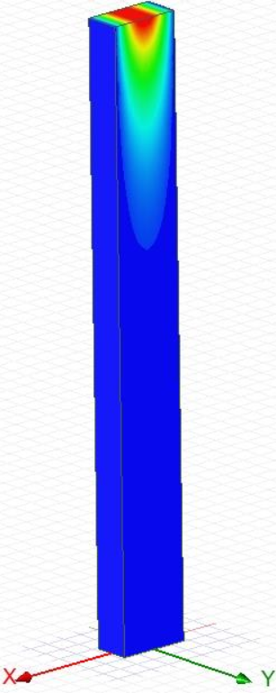
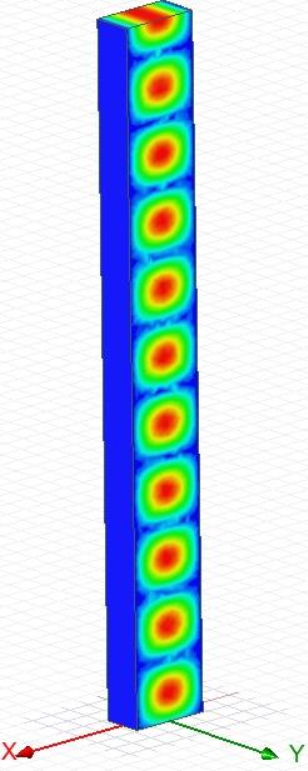
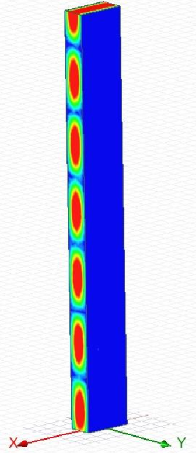
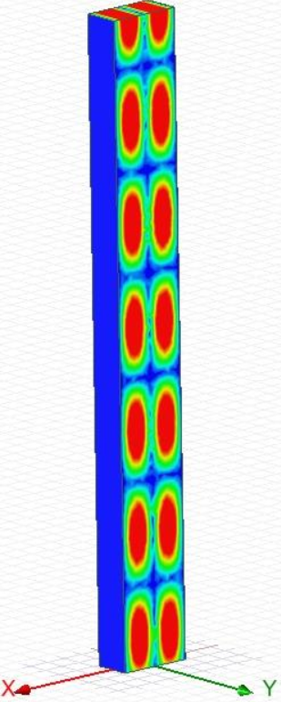
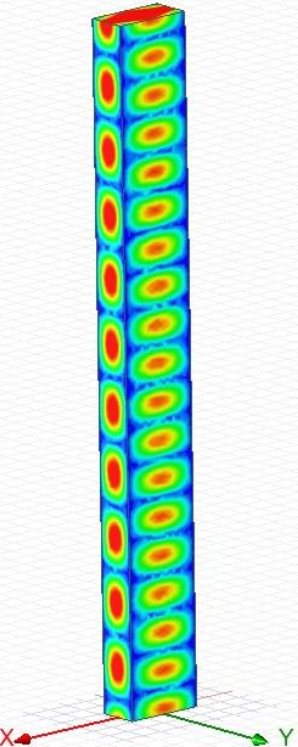
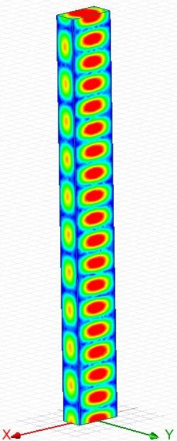
Surface current density Jˆ = nˆ × H was derived analytically for all four walls of the WR-28 guide in the TE₁₀ mode using the field solutions from class notes. The current flows longitudinally (along z) on the broad walls and circumferentially (looping) on the narrow walls, with the characteristic null at the broad-wall center characteristic of TE₁₀. MATLAB was used to produce both 2D wall maps and a 3D unfolded visualization.
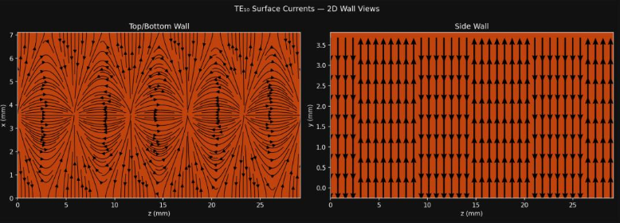
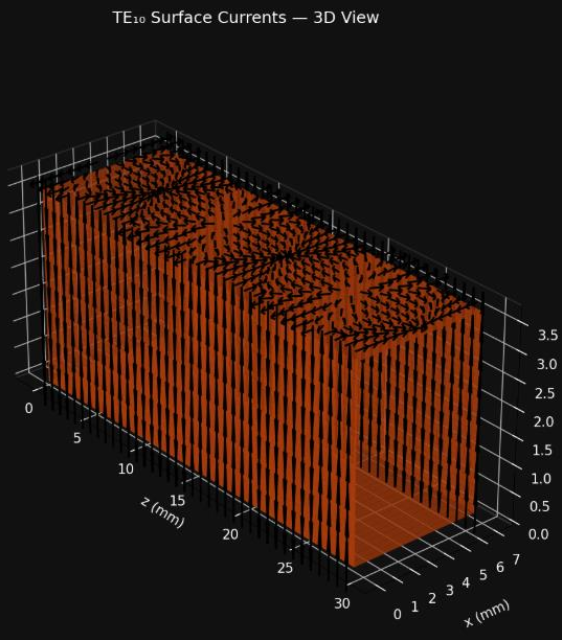
The HFSS simulation of the same WR-28 section (built in Part 1) was used to extract the surface current density from the full-wave solution. Agreement between the analytical and simulated current patterns confirms the field solution derivation.
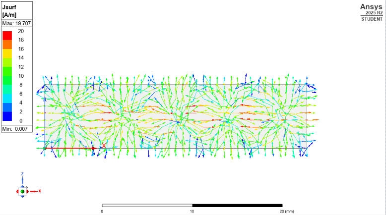
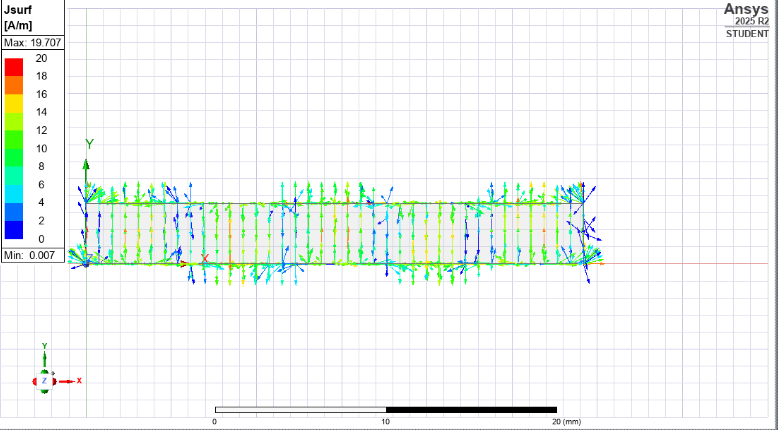
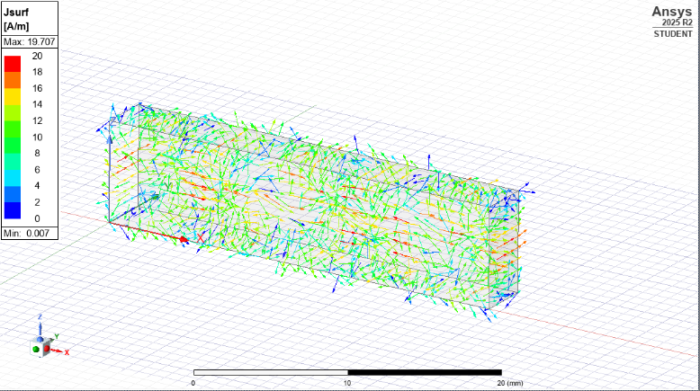
A T-junction power divider was designed and simulated in HFSS within the same WR-28 Ka-band waveguide. The T-junction splits an input wave from Port 1 equally between two output ports (Port 2, Port 3). S-parameter simulation characterizes the insertion loss and return loss across the Ka-band.
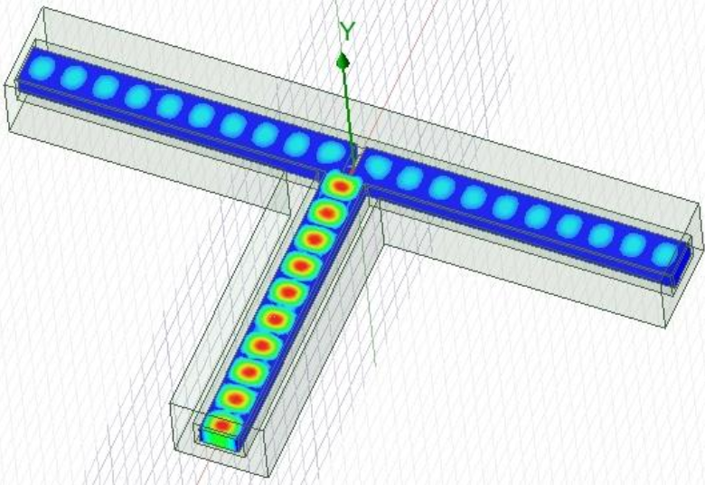
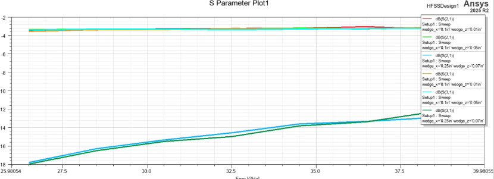